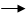

Recodificar variável
Recodificar variável
O caminho para essa janela é: Dados  Recodificar variável.
Figura 1. Janela "Recodificar variável".
A primeira informação que deve ser indicada na figura 1 se refere ao objeto de dados que será utilizado. Deve-se lembrar que para realizar esse filtro, o objeto de dados deverá ter sido previamente aberto no Epi-R (detalhes sobre como abrir dados ou importar dados via ODBC).
Em seguida, informe a variável que será utilizada.
Para modificar o formato de uma variável
Para modificar apenas o formato da variável selecionada, marque a opção "Copiar em formato numérico" na janela apresentada na figura 1. Fazendo isso, todas as demais opções serão desabilitadas e basta clicar em "Executar". Essa opção não cria uma nova variável mas sim, modifica a variável original do banco de dados.
Para criar uma nova variável categorizada
Para a criação de novas variáveis, depois de informar a variável de interesse, é necessário indicar também se o formato da variável que será utilizada. Se essa variável for numérica, os campos assistentes para a criação da nova variável estão apresentados na Figura 1. Porém, para variáveis categóricas, onde o desejo seja a recategorização, o assistente apresentado na Figura 2 deverá ser preenchido.
Para variáveis numéricas, estão disponíveis as seguintes formas de categorização:
Valores: Divide a variável original em categorias determinadas pelo usuário. Escreva os limites superiores para cada categoria, separando as categorias por vírgula.
Observação: as categorias serão sempre definidas por um intervalo aberto no limite inferior, e fechado no limite superior determinado. Por exemplo, ao definir uma catedoria de idades com os valores 5 a 10 anos, a representação será dada por (5,10] significando que os registros referentes a 5 anos não estão incluídos nessa categoria, já os registros com 10 anos sim, estarão incluídos nessa categoria. Se desejar incluir na categoria o limite inferior, marque a opção "Incluir limite inferior" do campo "Opções".
Quintis: Divide a variável em cinco grupos, separando as categorias segundo os quintis, ou seja, cada categoria irá se referir a 20% do total de informações da variável original.
Quartis: Divide a variável em quatro grupos, separando as categorias segundo os quartis, ou seja, cada categoria irá se referir a 25% do total de informações da variável original.
Mediana: Divide a variável em dois grupos, separando as categorias segundo a mediana, ou seja, cada categoria irá se referir a 50% do total de informações da variável original.
Percentis: Divide a variável original em grupos, separando as categorias de acordo com os percentis determinados pelo usuários. Deve-se lembrar que os percentis deverão ser escritos com números entre 0 e 1 e separados por vírgula.
Já para variáveis categóricas, o processo para categorização se dá de outra forma:
1. Selecione o botão "categórica", todos os valores para a variável serão apresentados em "Categorias atuais".
2. Clique em "Aplicar" e esses valores aparecerão no campo "Fatores".
3. Com um duplo clique em cada categoria, a janela apresentada na Figura 3 será aberta. Nessa janela, indique o nome, ou número para a nova categoria. Repita esse procedimento até completar todas as categorias.
Figura 2. Janela "Recodificar variável" apresentando a recategorização de uma variável.
Depois de formular as novas categorias, clique em "Aplicar" e verifique o resultado no campo "Fatores". Se as categorias estiverem corretas, o próximo passo consiste na criação dos respectivos labels, ou seja, os nomes desejados para cada categoria. Ao dar um duplo clique na categoria, a janela apresentada na Figura 3 será aberta. Escreva o nome que deseja atribuir para a categoria.
Figura 3. Janela auxiliar para a renomeação das categorias.
Quando todas as categorias tiverem sido renomeadas, clique em "Atualizar".
O próximo passo é a escolha do nome para essa nova variável, e para isso, o campo "Salvar como" deverá ser preenchido.
Algumas opções adicionais estão disponíveis:
Ordenar fatores: Utilize essa opção para indicar a variável criada apresenta ordenação.
Incluir limite inferior: Utilize essa opção para incluir o valor do limite inferior da categoria.
Depois de selecionar todas as opções desejadas, basta clicar em "Executar". Para construir sucessivas variáveis usando essa janela, marque a opção "Manter essa janela aberta para outra operação". Com isso, o objeto será criado, e seu nome aparecerá no campo "Objetos" da tela principal do Epi-R, mas essa janela não será fechada, evitando o retrabalho de acessá-la.